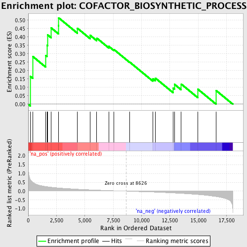
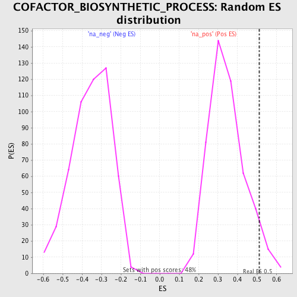

| | | Dataset | GSEA_Acromegaly_prerank_FC |
| Phenotype | NoPhenotypeAvailable |
| Upregulated in class | na_pos |
| GeneSet | COFACTOR_BIOSYNTHETIC_PROCESS |
| Enrichment Score (ES) | 0.5137234 |
| Normalized Enrichment Score (NES) | 1.4778588 |
| Nominal p-value | 0.050314464 |
| FDR q-value | 0.33404705 |
| FWER p-Value | 1.0 |
Table: GSEA Results Summary

Fig 1: Enrichment plot: COFACTOR_BIOSYNTHETIC_PROCESS
Profile of the Running ES Score & Positions of GeneSet Members on the Rank Ordered List
| PROBE | GENE SYMBOL | GENE_TITLE | RANK IN GENE LIST | RANK METRIC SCORE | RUNNING ES | CORE ENRICHMENT | | 1 | ME1 | | | 185 | 0.675 | 0.1660 | Yes |
| 2 | ALAS2 | | | 412 | 0.498 | 0.2835 | Yes |
| 3 | COQ2 | | | 1535 | 0.265 | 0.2906 | Yes |
| 4 | ALAD | | | 1654 | 0.255 | 0.3507 | Yes |
| 5 | TSPO | | | 1724 | 0.249 | 0.4119 | Yes |
| 6 | CPOX | | | 2024 | 0.225 | 0.4541 | Yes |
| 7 | UROS | | | 2660 | 0.185 | 0.4673 | Yes |
| 8 | PDSS2 | | | 2689 | 0.184 | 0.5137 | Yes |
| 9 | FECH | | | 4336 | 0.114 | 0.4522 | No |
| 10 | COX10 | | | 5452 | 0.078 | 0.4106 | No |
| 11 | GCLC | | | 6052 | 0.060 | 0.3931 | No |
| 12 | COX15 | | | 7110 | 0.037 | 0.3441 | No |
| 13 | COQ7 | | | 7574 | 0.024 | 0.3248 | No |
| 14 | MOCS2 | | | 8938 | -0.008 | 0.2514 | No |
| 15 | PDSS1 | | | 10986 | -0.054 | 0.1520 | No |
| 16 | COASY | | | 11235 | -0.062 | 0.1544 | No |
| 17 | COQ3 | | | 12787 | -0.107 | 0.0963 | No |
| 18 | PPOX | | | 12899 | -0.110 | 0.1188 | No |
| 19 | GCLM | | | 13505 | -0.132 | 0.1196 | No |
| 20 | ALAS1 | | | 14963 | -0.195 | 0.0897 | No |
| 21 | NFE2L1 | | | 16580 | -0.312 | 0.0816 | No |
Table: GSEA details [plain text format]

Fig 2: COFACTOR_BIOSYNTHETIC_PROCESS: Random ES distribution
Gene set null distribution of ES for COFACTOR_BIOSYNTHETIC_PROCESS